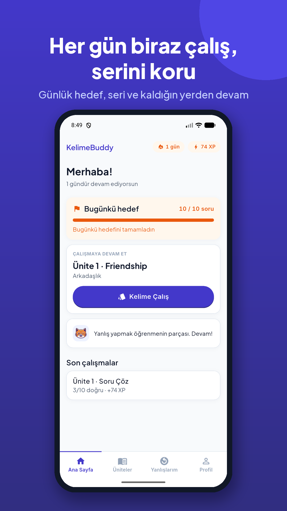
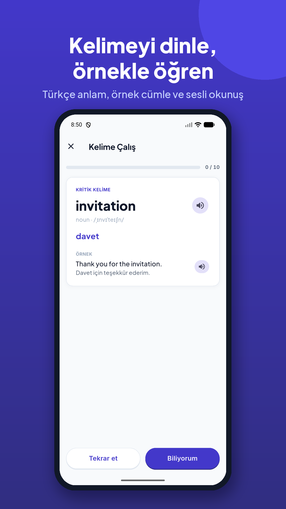
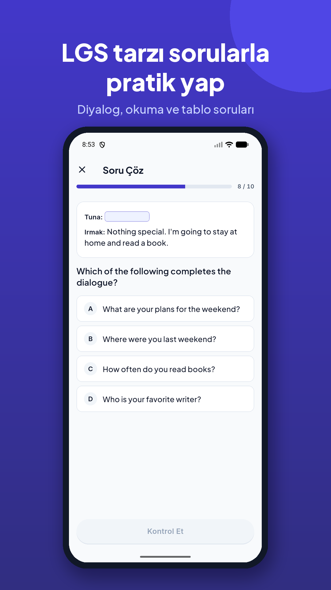
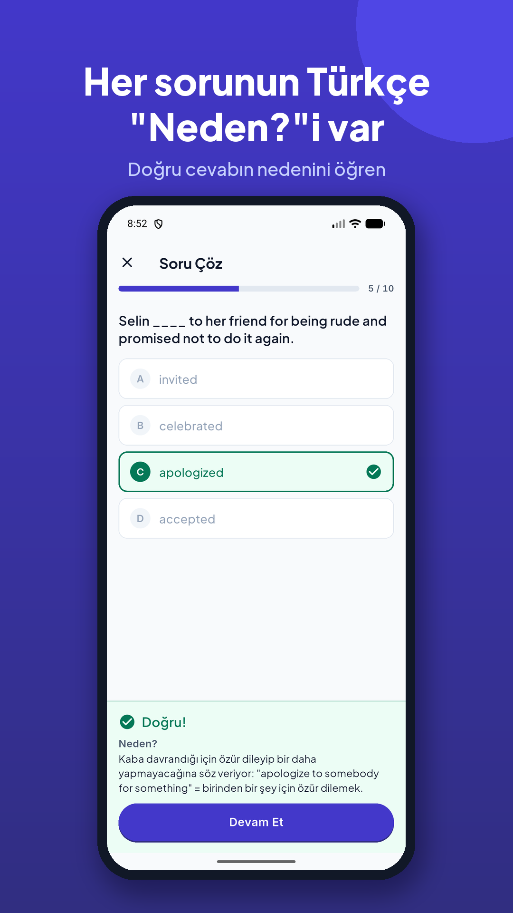

LGS İngilizce'ye kendi hızında hazırlan
KelimeBuddy, LGS'ye hazırlanan 8. sınıf öğrencileri için ünite ünite kelime çalışma ve LGS tarzı soru çözme uygulamasıdır. Her sorunun Türkçe açıklaması vardır; yanlışlarını tekrar çözer, kelimeleri aralıklı tekrarla pekiştirirsin.
Uygulama ücretsizdir, reklam göstermez. Gerçek adını, okulunu, telefonunu veya konumunu istemez.

Neler var?
📚 Ünite ünite kelime çalış
Her kelimenin Türkçe anlamı, örnek cümlesi ve sesli okunuşu var. Aralıklı tekrar sayesinde bildiğin kelimeler seyrek, zorlandıkların daha sık karşına çıkar.

📝 LGS tarzı sorular
Diyalog tamamlama, duruma uygun cevap, e-posta okuma, tablo yorumlama gibi gerçek LGS soru tipleri. Her sorunun "Neden?" açıklaması var.

💡 Neden doğru, neden yanlış?
Sadece doğru cevabı görmüyorsun — neden doğru olduğunu Türkçe anlıyorsun. Yanlış yaptığın sorular kaydedilir, istediğin zaman tekrar çözersin.

🔥 Günlük hedef ve seri
Günlük soru hedefini sen seçersin. Mini Test'te 10 soru 12 dakikada, gerçek sınav gibi; net hesabı dahil.
Veliler için
- Reklam yok
- Gerçek ad, okul, telefon veya konum istenmez
- Sohbet, arkadaş ekleme veya herkese açık sıralama yok
- Hesap açmadan kullanılabilir; istenirse ilerleme e-posta ile kaydedilir
- Hesap ve tüm veriler uygulama içinden tek dokunuşla silinebilir
Şu an nasıl deneyebilirim?
KelimeBuddy şu an Google Play'de kapalı beta aşamasında — herkese açık değil. Denemek veya beta grubuna katılmak istersen bize yaz, seni ekleyelim.
İletişim
Soru, öneri ve talepleriniz için: destek.kelimebuddy@gmail.com